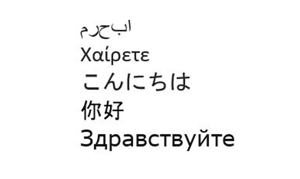

1 Thinking about reading and writing¶
First, watch the following video where some learners talk about the difficulties of reading and writing in a foreign language.
LEARNER 1: Writing it is quite difficult because I find that I start off in English, and I’ll still have to translate into Japanese, and you can’t translate directly from English to Japanese. It’s totally different ways of saying things. And so I think that’s one of the major problems, really. LEARNER 2: So, I mean, when it comes to reading in Spanish, there are some difficulties that I have. If you are reading and you encounter words that you don’t know and you get stuck and get hung up on one particular word and therefore you’ve lost the meaning of the sentence itself, perhaps if you have to go look up the meaning of that word in a dictionary and then you return to the sentence, you perhaps forgot where you were going. And then writing. Yes, writing in Spanish, you potentially you’re trying to write something down and you don’t necessarily have a vocabulary that you want, so you have to improvise a little bit and use vocabulary or you that you do have to try and circumvent your difficulty. But then, perhaps, you’ve written something that doesn’t sound very native-like. You looked like you’ve produced something that is very much from a learner and isn’t very naturalistic at all. |
 Reading and writing are perceived as the basics of education: if a person can’t read or write, they are considered illiterate. Reading and writing in another language can be a very frustrating experience, after all, you can read and write in your own language.
Reading and writing are perceived as the basics of education: if a person can’t read or write, they are considered illiterate. Reading and writing in another language can be a very frustrating experience, after all, you can read and write in your own language.
The first challenge when learning to read and write in another language may be as basic as the alphabet or script. Learners of Greek, Russian, Arabic, Chinese or Japanese, for example, are confronted by texts which offer little that can be recognised for someone who is only familiar with the Roman alphabet. Likewise, learners whose languages use other types of script face the same problem when learning languages such as English, Spanish or German.
The challenges are different depending on whether the language you’re learning has a different alphabet or a logographic script. In the case of different alphabets (e.g. Greek or Russian), you have to learn how to write the letters and which sounds in the language each of those letters represent. The letters are then joined together to make words. In the case of logographic languages such as Chinese or Japanese, each symbol will have a sound, a graphic representation, and a variety of meanings that change depending on the context and to what other symbols it’s linked to form new words.
Learning to write different scripts will take time and a lot of practice, as it did to learn how to write in your own language when you were a child.
Activity 1 Writing hello in different scripts¶
Timing: Allow about 5 minutes
Question¶
Look at the words for ‘hello’ in Arabic, Greek, Japanese, Mandarin Chinese and Russian below. Copy the script for each language on a piece of paper to experience what it’s like to write with different scripts.

Figure 1 ‘Hello’ in different languages
Discussion¶
If you are learning a language with a different script, you will need to spend some time getting to grips with it, so make sure you factor that into your learning. In many languages there are accented and other special letters, and you will also need to pay attention to how they are used, as using them wrongly or not using them can change the meaning of words.